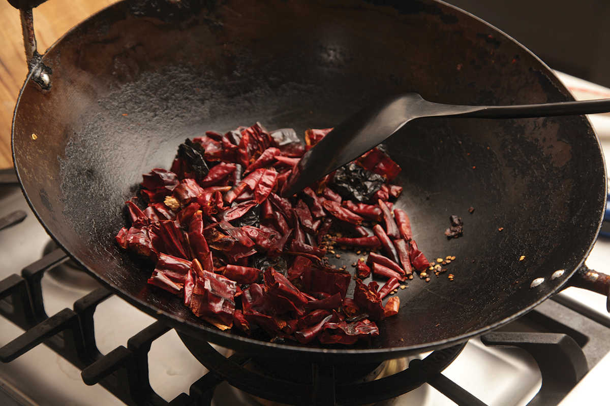
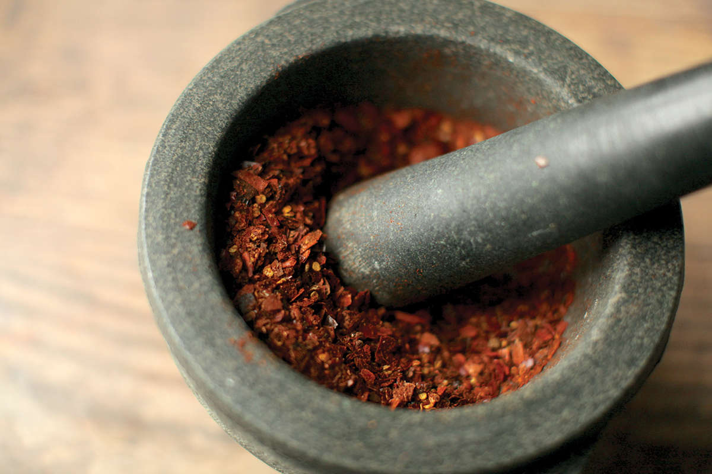
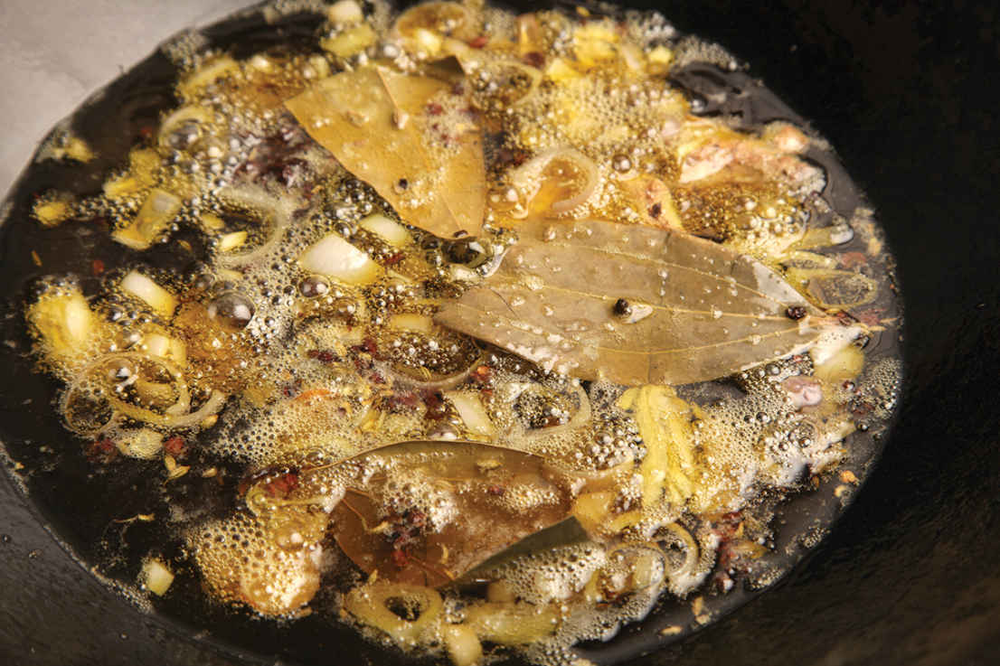
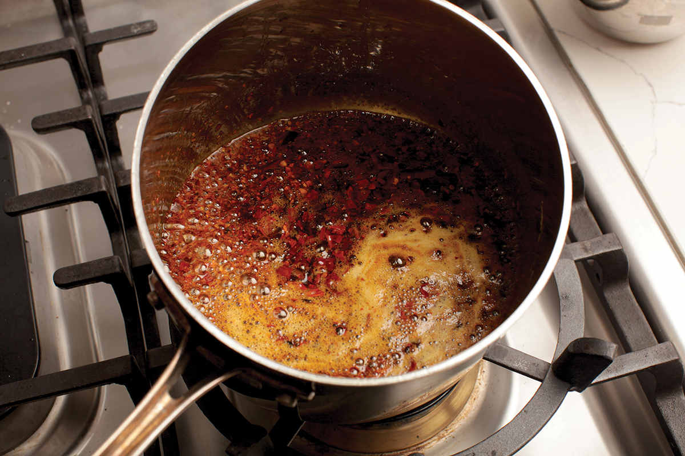
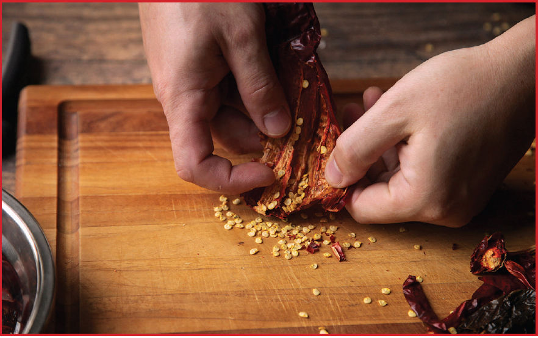
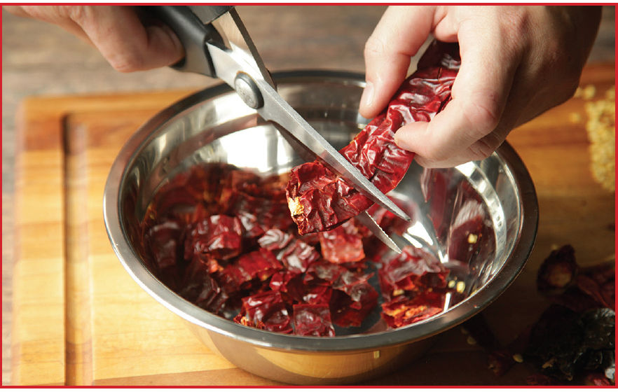
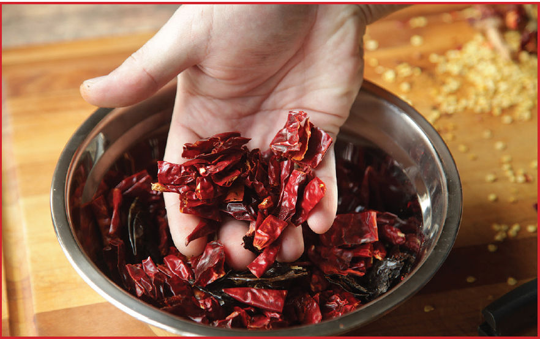
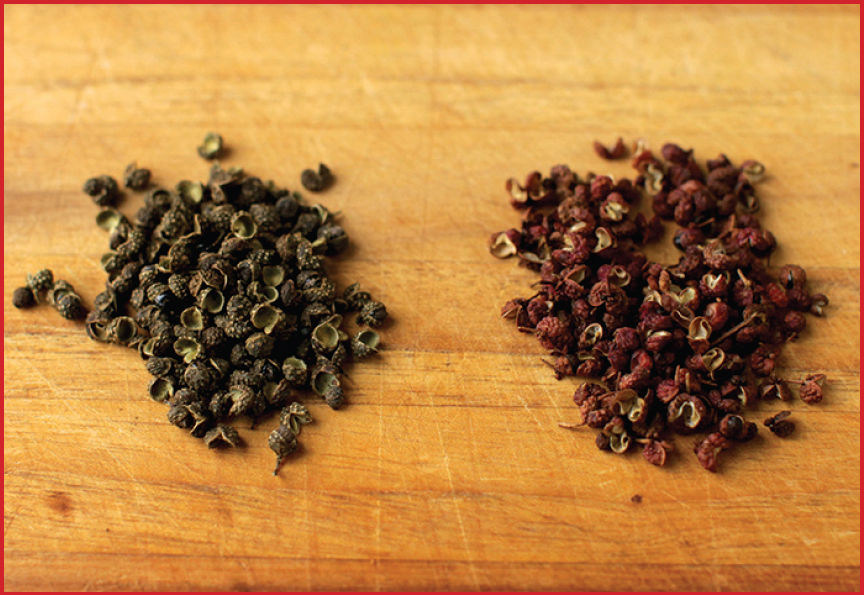
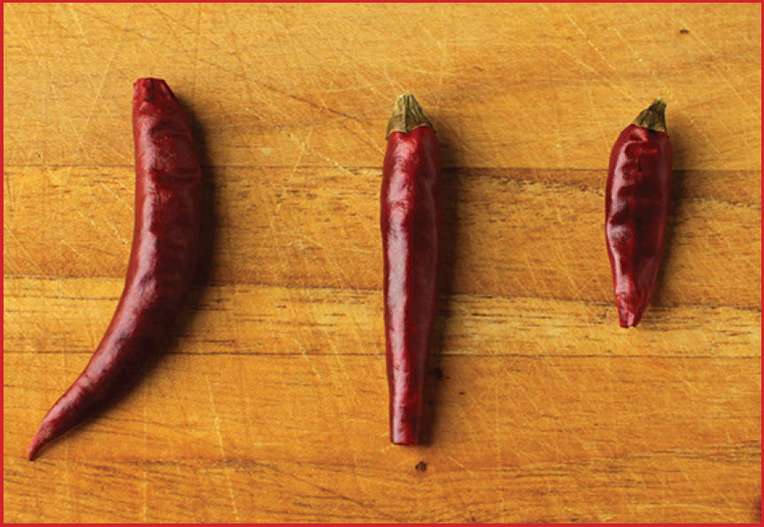

SICHUAN MÁLÀ (HOT AND NUMBING) CHILE OIL
|
Yield 2 cups (625 ml) |
Active Time 20 minutes Total Time 45 minutes |
For a more authentic flavor, use whole er jing tiao and chao tian jiao chiles in step 1. If authenticity is not your goal, you can use whatever chiles you like for this, or a mix of chiles, the more the merrier. (See the chart “Packing Heat” on here for an indication of how hot you should expect your chile oil to be.) I like to use a minimum of two different types of whole chiles for this, but even one type will work just fine.
Caiziyou is roasted rapeseed oil and considered by some to be an essential flavor in Sichuan cooking. You can find it online at the Mala Market or at a well-stocked Chinese supermarket. The easiest way to identify it is to look for bottles labeled “rapeseed” with a significantly darker, more amber-yellow color.
When adding the chile flakes in step 4, note that Sichuan er jing tiao chile flakes will be significantly spicier than Korean chile flakes.
INGREDIENTS
2 ounces (60 g) mixed dried chiles, such as árbol, Japones, pasilla, California, negro, or ancho (see Notes)
3 tablespoons (15 g) Sichuan peppercorns
2 cups (500 ml) oil, preferably caiziyou (roasted rapeseed oil; see Notes)
4 medium garlic cloves (10 to 15 g), lightly smashed with the side of a knife
One ½-inch knob fresh ginger (about 30 g), smashed with the side of a knife
1 medium shallot (about 1½ ounces/45 g), roughly chopped
1 cinnamon stick
3 dried bay leaves
2 whole star anise pods
1 tablespoon (8 g) whole fennel seeds
One 2-inch piece orange zest removed from a fresh orange with a vegetable peeler
To Finish:
¾ cup (75 g) ground Sichuan er jing tiao or Korean chile flakes (see Notes)
2 tablespoons (16 g) white sesame seeds (optional)
½ teaspoon (2 g) MSG (optional)
1 teaspoon (4 g) kosher salt
There is a wide range of chile-infused oils used throughout Asia, from sweet-hot versions with nubs of crispy garlic spooned into Japanese ramen to savory soy-sauce-laced Chaozhou-style (Chiu Chow) chile oil, to trendy Lao Gan Ma spicy chile crisp, with its crunchy bits of chile and peanut. Sichuan málà chile oil is among the most complex and satisfying to make, and I can’t remember the last time I didn’t have a batch of it in my fridge.
Recipes you’ll find in books and online vary wildly. Some recommend pouring the hot oil over a small mound of chile flakes to bloom their flavor. Others recommend toasting the chiles in a small amount of oil first, grinding them, then recombining them with the remaining oil. Most call for infusing the oil with a variety of warm spices like cinnamon, star anise, and ginger. Heck, if you check online, I probably have a half dozen different variations of homemade chile oil published on various sites, and when I make it at home, I rarely make it exactly the same way twice.
That said, I have refined my technique to the point where I believe it’s optimal for my own uses. The exact ingredients I use still vary a little from batch to batch, depending on the chile selection I have at home and my mood when I raid the spice cabinet.
For the chile element, I’ll typically include either ground Sichuan er jing tiao chile (see “Shopping for Sichuan Peppercorns and Sichuan Chiles,” here) or—be ready for some blasphemy—ground Korean gochugaru. Both are flavor-first chiles with relatively mild heat, but the gochugaru are the milder of the two, which is good if you or a family member have low tolerance for spiciness but still love the flavor and aroma of chile oil. In addition to ground chile, I add about an equal amount of dried whole chiles. Traditional recipes would call for chao tian jiao (heaven-facing chiles) or fiery xiao mi la, which are fine if you’re after authenticity, but where I live, I can find a wide variety of high-quality dried Mexican chiles, so I often include a mix of those in my chile oil as well. Fruity guajillo or smoky, raisiny ancho make for a really tasty chile oil.





As for technique, I start by toasting the whole chiles in a dry wok to bring out their flavor, then grind them up in the food processor or in a mortar and pestle (the latter method offers better texture and is, in fact, easier—dried chiles have a tendency to ride around the blades of a food processor). Next I slowly infuse oil with a variety of aromatics—garlic, ginger, shallots, cinnamon, bay leaf, star anise, fennel, and a piece of fresh orange zest (an addition I tried on a whim one year during California’s lengthy citrus season). There’s a relatively small ideal temperature window for this infusion. Below 200°F and you will barely get any flavor transfer and transformation at all, but above 250°F and you’ll start to burn your aromatics before they have a chance to fully give up their flavor. For this reason, I strongly recommend using an accurate digital instant-read or deep-fry thermometer while you make the infusion. Around 30 minutes at 225°F is what to aim for.
Once the oil is infused, I strain out and discard the aromatics, then reheat the infused oil with my toasted and pounded whole chiles, as well as the ground chile flakes. As with the aromatics, slowly heating up the chiles and making sure that they don’t heat past 250°F is key to developing aroma and color without introducing any burnt off-flavors. I find that this technique offers much more control over the flavor of the finished oil than the admittedly more dramatic sizzling pour-over method. (Don’t worry, if you want to be dramatic, Water-Boiled Beef on here includes a sizzling pour-over that you can do right in front of your guests. They will find it awesome, I promise.)
I season the finished oil with some sesame seeds, MSG (which you don’t have to add; see “The Truth About MSG” on here), and salt.
DIRECTIONS
1 Using a pair of kitchen shears, cut all of the whole chiles into ½-inch pieces and discard the seeds. Toast the cut chiles and 1 tablespoon (5 g) of the Sichuan peppercorns in a dry wok or saucepan over medium heat, stirring and shaking constantly, until fragrant and lightly darkened in color, about 2 minutes. Transfer the toasted chiles to the bowl of a food processor or mortar and pestle and pulse or pound until the chiles break into ⅛- to ¼-inch pieces that resemble store-bought red-pepper flakes or flaky sea salt. (Be careful not to overprocess.) Set aside.
2 Combine the remaining 2 tablespoons (10 g) Sichuan peppercorns, the oil, garlic, ginger, shallot, cinnamon stick, bay leaves, star anise, fennel seeds, and orange zest in your wok. Heat over medium-low heat until gently bubbling, then reduce the heat until the bubbling mostly subsides (the oil should register 200° to 225°F (95° to 105°C) on an instant-read thermometer). Cook until the garlic and shallots are pale golden brown and the oil is intensely aromatic, about 30 minutes.
3 Strain the oil through a fine-mesh strainer and discard the spices and aromatics (you can save the lightly browned garlic and shallots to chop and add to eggs or noodle dishes, or just season with salt and eat them on their own; they are delicious).
4 Return the oil to the wok and add the pounded chile/Sichuan peppercorn mixture as well as the ground chile flakes. Heat over medium-low heat, stirring constantly, until the chile flakes begin to bubble gently, then reduce the heat until the bubbling mostly subsides (the oil should register 200° to 225°F (95° to 105°C) on an instant-read thermometer). Cook stirring occasionally, until the oil is deep red and has a slightly nutty aroma, 5 to 7 minutes. Remove from heat and stir in the sesame seeds, MSG, and salt. Allow the oil to cool completely, then transfer to sealable containers. For best flavor, let the oil rest overnight in the refrigerator before using. The oil should last for several months or longer in sealed containers in the refrigerator.
How to Prepare Dried Chiles
Whether using Chinese or Central American dried chiles for chile oil, I recommend removing their stems and seeds to improve flavor and texture. The easiest way to do this is with a pair of kitchen shears. For small chiles like er jing tiao or árbol, simply snip off the tops, then turn them upside down to shake out the seeds. For larger chiles like chile California or chile ancho, cut off the stems with shears, snip down one side to open them up, then scrape out the seeds and any large bits of their inner ribs with your fingers, then snip the chiles into uniform pieces for toasting.



Málà: Sichuan’s Most Famous Flavor Export
In Fuchsia Dunlop’s classic cookbook The Food of Sichuan, she translates a Chinese saying, shi zai zhongguo, wei zai sichuan: China is the place for food, but Sichuan is the place for flavor. While Sichuan’s reputation in the West may be for incendiary, fiery dishes, that’s only part of the story. It’s certainly true that Sichuan food tends to be spicy—dried, pickled, and fresh chiles, fermented chile pastes, and crimson-red chile oils permeate the cuisine—but that chile heat is always balanced with an array of other flavors. “Fish fragrant” (yu xian wei) dishes temper chile heat with pickled ingredients and lots of garlic (as in Fish-Fragrant Eggplant, here, or Shredded Chicken with Pickled Chiles and Carrots, here), for instance. “Strange flavor” (guai wei) combines chile oil with vinegar, soy sauce, sesame paste, garlic, Sichuan peppercorn, sugar, and more for a kitchen sink approach that allows you to identify each flavor on its own, while blending them all into a new flavor that is, well, strange (and delicious! See Bang Bang Chicken, here).
Málà, or “numbing hot,” is Sichuan’s most famous flavor export and also one of its simplest. It’s the flavor of dishes like Mapo Tofu (here), or the ironically named Water-Boiled Beef (which should really be called chile-simmered beef, here). At its core, it’s the combination of mouth-numbing Sichuan peppercorns and dried chiles. What makes it so enticing? For me it’s the way that Sichuan peppercorns and dried chiles play off each other. You take a bite of mapo tofu and the first sensation you get is that complex aroma of fruity, roasted chiles mingling with the citrusy fragrance of the Sichuan peppercorns. Next you feel the heat on your tongue, as the capsaicin in chiles acts fast. Just when the heat might threaten to get overwhelming, the numbingness kicks in and you’re distracted by the strange tingle as the fire starts to subside. It’s a rush of feelings, each bite a roller coaster of sensation that leaves your mouth ready for the next crest.
Shopping for Sichuan Peppercorns and Sichuan Chiles

From 1968 to 2005, the United States had a loosely enforced ban on the import of Sichuan peppercorns due to fears of a bacterial infection that could affect citrus trees, and between 2005 and 2007 the only peppercorns available had to be pasteurized through heat treatment before sale, dramatically reducing their aroma and potency. So while it was still possible to find Sichuan peppercorns during that time, the majority of them were of very questionable quality. I remember sitting at my kitchen table in the mid-2000s, painstakingly sorting through bags of Sichuan peppercorns to pick out the piles of hard black seeds, dried leaves, and twigs to get at the good stuff: the flavorful seed husks.
These days, while it’s still possible to run across some bad-quality spices, we are in a veritable golden era of ingredient availability. The quality of Sichuan peppercorns and variety of chiles imported from Sichuan and neighboring Guizhou can be stellar, whether from online retailers or at the Asian supermarket. Here’s what you should be looking for.
Whole Sichuan Peppercorns
Sichuan peppercorns, known as huajiao in China and sansho in Japan, are not actually peppercorns; they’re the husk of berries from Chinese prickly ash. The main flavor component they add to a dish is a light, citrusy, piney aroma, but equally important is their physiological effect. Sichuan peppercorns are not spicy in the traditional sense. Rather, they produce a numbing, tingling effect on your tongue and lips, similar to a light anesthetic. The chemical responsible for this reaction is hydroxy-alpha sanshool, a compound that has been found to stimulate our light-touch receptors by inhibiting two-pore potassium channels. The phrase “tickle your taste buds” is especially apt when it comes to Sichuan peppercorns, because that is quite literally what they trick you into feeling (see “What Makes Sichuan Peppercorns Tingle” on here). There are several subspecies of prickly ash, but in general you’ll find two categories of Sichuan peppercorn, red and green, the latter having a more powerful numbing effect and aroma.
The quality of Sichuan peppercorns can vary dramatically, with low-quality versions containing lots of twigs and black seeds (which must be picked out and discarded) and only mild flavor and the best being usable straight out the bag with a powerful numbing effect and aroma. Soeos and SNS are two brands that have consistently high standards. You can also get excellent Sichuan peppercorns from themalamarket.com, or from spicyelement.com.
Sichuan peppercorns should be stored in a sealed container in a cool, dark pantry, where they will last for about a year before you notice a significant deterioration in aroma or numbing ability.
Ground Sichuan Peppercorns
Ground Sichuan peppercorns and Sichuan pepper oil are also commonly found at Chinese markets, but I would avoid them, as their quality can be quite variable and spices lose their flavor much more rapidly in ground form. Instead, for recipes that call for ground Sichuan pepper, toast and grind the peppercorns yourself. Start by sorting through the peppercorns to remove any twigs and shiny dark seeds. Heat the husks in your wok over medium-low heat, stirring constantly, until an intense floral fragrance fills the room. This should take a couple of minutes. Transfer the peppercorns to a mortar and pestle and grind them with a circular motion until they’re reduced to a mix of fine powder and white husks. You can use the mixture as is, or for better results, shake it through a fine-mesh strainer to remove the husks and discard them. (You can also grind toasted peppercorns in an electric spice grinder.) Store ground Sichuan pepper in an airtight container in a dark pantry where it will be fine to use for several weeks, after which it’ll steadily start to lose flavor.
Dried Sichuan Chiles

To contrast this feeling of numbness, there is a wide variety of dried chiles used in Sichuan cuisine, the most important being er jing tiao and chao tian jiao.
Er jing tiao chiles are prized for their fragrant, floral aroma and moderate heat. They are an essential ingredient in true Sichuan-style chile oils, where they typically make up the bulk of the chile content. You’ll find them online or at the Chinese supermarket labeled either “er jing tiao” or sometimes “mild Sichuan chile” (though mild is a relative term here). You’ll recognize them by their distinct curved, lowercase j shape and deep red color. If there’s only one type of chile that you’re going to special order, I’d make it this one.
Chao tian jiao, or “heaven-facing chiles,” are so called because they grow with their fruit pointed upward. Bullet head or zidantou are the most common cultivars of this chile, and you’ll sometimes find them sold under those names. They are hotter than er jing tiao, though not unbearably so. They’re noted for their deep red color, which in turn gives chile oil its dark hue. Their attractive appearance makes them good for dishes in which a ton of dried chiles add visual appeal and aroma, but not absurd levels of heat, such as Chongqing-style Dry-Fried Chicken (here) or Water-Boiled Beef (here). If you can’t find chao tian jiao, árbol, Japones, or pequín all make decent substitutes. You can use dried Thai bird chiles as well; just be aware that they are often significantly hotter.
Other popular chiles in Sichuan are xiao mi la, which are small, fiery chiles similar to Thai Bird chiles, and deng long jiao, or lantern chiles, which are short and stubby with a similar flavor profile and heat level to those of heaven-facing.
As with Sichuan peppercorns, I find that online is the best place to get high-quality Sichuan chiles. I buy mine from themalamarket.com or spicyelement.com.
If shopping for chile peppers at a supermarket, look for peppers that have smooth, unblemished surfaces and that are pliable when you bend them. (Most peppers are sold in clear plastic bags, which makes it easy to feel how pliable and moist they are.) Peppers that crack, are browning, or crumble when bent or squeezed are no good. I store all of my dried chiles in zipper-lock bags in the freezer to preserve their freshness. In the freezer dried chiles should last a year or more.